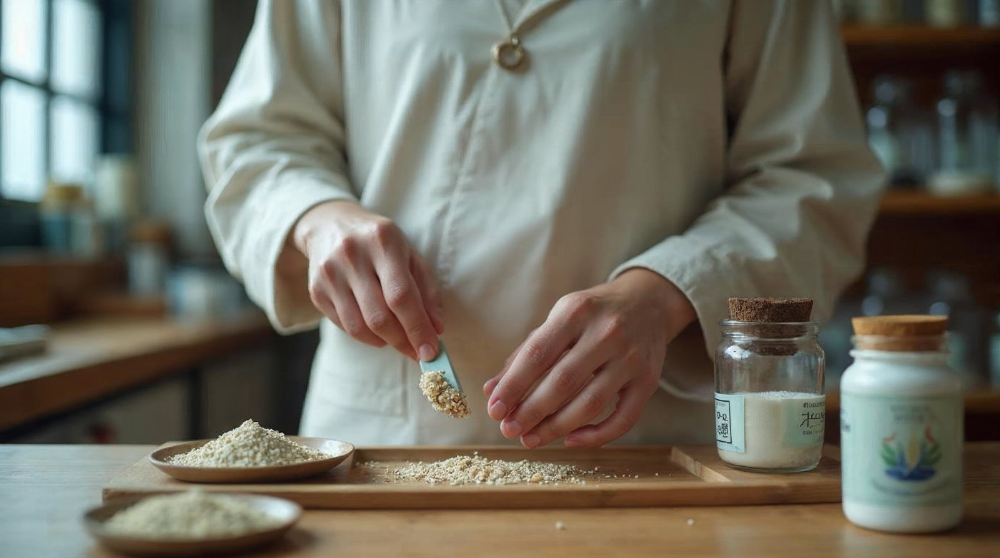
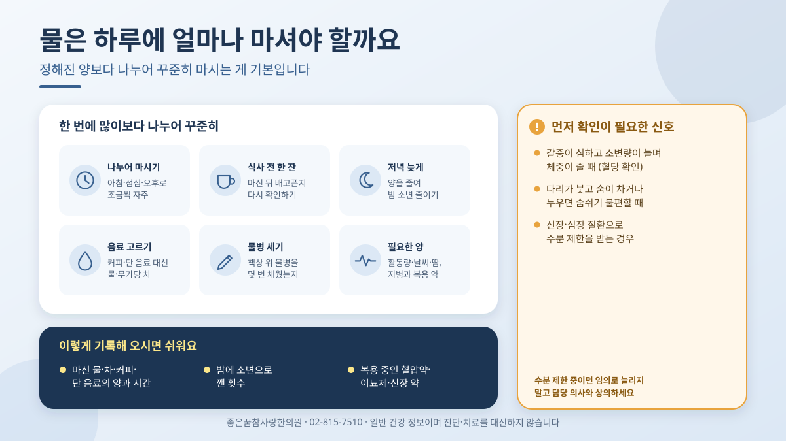

이종호 한의사 감수좋은꿈참사랑한의원 대표원장 (한의사 면허번호 19769)발행 2026-11-22 · 수정 2026-11-26
이 글의 차례
오후 네 시, 난방이 돌아가는 사무실. 책상 위 물병은 아침에 채운 그대로인데 커피 잔은 벌써 두 번째입니다. 입이 텁텁한 건지 출출한 건지 헷갈려 서랍 속 과자 봉지에 손이 갑니다.
저녁이 되어서야 오늘 물을 거의 안 마셨다는 생각이 들어, 자기 전에 큰 컵으로 두 잔을 들이켭니다. 그리고 새벽 세 시, 화장실 때문에 눈을 뜹니다. 진료실에서 이런 하루 이야기를 생각보다 자주 듣습니다.
체중이나 혈당, 혈압을 챙기기 시작하면 물 이야기가 꼭 따라옵니다. 어디서는 여덟 잔, 어디서는 2리터라고 하니 무엇을 따라야 할지 헷갈리실 만합니다. 정해 둔 양을 못 채운 날이면 숙제를 밀린 것처럼 마음이 무거워지시지요.
먼저 답부터 드리겠습니다. 저는 하루 몇 리터라는 정답보다 아침, 점심, 오후에 나누어 꾸준히 마시고, 갈증과 소변 색, 활동량과 날씨, 식사를 보며 양을 조절하시라고 말씀드립니다.
다만 심장이나 콩팥 질환, 부종 때문에 수분 제한을 받고 계시다면 이야기가 다릅니다. 이 글의 어떤 안내보다 담당 의사의 지시가 먼저입니다. 물을 늘리거나 줄이기 전에 꼭 먼저 여쭤보세요.
왜 하루 몇 리터라는 정답을 드리기 어려울까요
몸속 물은 하루 종일 들어오고 나갑니다. 마시는 물과 음료, 밥과 국, 과일과 채소로 들어오고 소변과 땀, 숨, 대변으로 빠져나갑니다. 들어오는 쪽과 나가는 쪽이 사람마다, 날마다 다르니 필요한 양도 달라질 수밖에 없습니다.
몸집이 큰 분과 작은 분, 하루 종일 앉아 있는 분과 현장에서 땀 흘리며 일하는 분이 같은 양을 마실 이유는 없습니다. 여름 한낮과 난방을 켠 겨울 실내도 다르고, 국물을 즐기는 식탁과 마른반찬 위주의 식탁도 들어오는 물이 다릅니다.
드시는 약과 지병도 큰 몫을 합니다. 이뇨제처럼 소변을 늘리는 약이 있고, 입을 마르게 하는 약도 있습니다. 심장이나 콩팥이 물을 감당하기 어려운 상태라면 오히려 마시는 양을 정해 두고 지켜야 합니다.
그래서 저는 숫자 하나를 드리기보다 내 몸이 보내는 신호를 읽는 법을 함께 익히자고 말씀드립니다. 복지관 강연에서 누구에게나 좋다는 방법이 어떤 분에게는 맞지 않을 때가 있다고 말씀드린 적이 있는데, 물도 다르지 않습니다.
내 몸에 맞는 양을 가늠하는 다섯 가지 기준
첫째는 갈증입니다. 목이 마르면 미루지 말고 마시는 것이 기본입니다. 다만 나이가 들수록, 또 추운 계절일수록 갈증을 늦게 느끼는 분이 많아서 목마름만 기다리다 보면 한발 늦을 때가 있습니다.
둘째는 소변 색입니다. 맑거나 옅은 노란색이면 대개 크게 걱정하지 않으셔도 됩니다. 진한 노란색이 이어지거나 낮 동안 한참을 화장실에 가지 않았다면 물이 모자라다는 신호일 수 있습니다.
비타민 영양제를 드신 날은 소변이 유난히 샛노랄 수 있어 색 하나로만 판단하지는 않습니다. 반대로 콜라처럼 진한 갈색이거나 붉게 보인다면 물 문제로 넘기지 마시고 서둘러 병원 진료를 받으세요.
셋째는 활동량과 땀입니다. 걷기나 운동을 시작한 날, 언덕과 계단을 오르내린 날, 땀을 흘린 날에는 평소보다 조금 더 챙깁니다. 운동하는 동안 몇 모금씩 나누어 마시는 편이 끝나고 한꺼번에 들이켜는 것보다 몸이 편합니다.
넷째는 날씨와 실내 공기입니다. 여름에는 땀으로, 겨울에는 난방으로 마른 공기 속에서 물이 빠져나갑니다. 겨울에는 땀이 덜 나는 만큼 마시는 양까지 줄기 쉬우니 따뜻한 물이나 차로 챙겨 보세요.
다섯째는 식사입니다. 국과 찌개, 밥, 과일과 채소에도 물이 꽤 들어 있습니다. 체중을 줄이겠다고 끼니를 거르거나 식사량을 갑자기 줄이면, 음식으로 들어오던 물도 함께 줄어든다는 점을 기억해 두세요.
커피와 단 음료, 그리고 갈증과 허기
하루 물을 얼마나 드시느냐고 여쭈면 물 대신 커피 잔 수를 먼저 떠올리시는 분이 많습니다. 커피나 차만 드시고 물은 거의 안 드시는 분이 생각보다 흔합니다. 커피만으로는 모자랄 수 있어 물은 따로 챙기시길 권합니다.
커피를 드셨다면 물도 한 잔 곁들여 보세요. 오후 늦은 커피는 잠까지 건드릴 수 있으니, 오후의 두 번째 잔을 물이나 보리차로 바꾸는 것부터 시작해도 좋습니다.
단 음료와 주스는 목을 축여 주는 것 같아도 당이 함께 들어옵니다. 마시고 나면 금세 또 무언가 당기기 쉽지요. 대사 관리를 시작하셨다면 갈증에는 물이나 따뜻한 차가 먼저입니다.
갈증을 배고픔으로 착각해 간식을 찾는 경우도 있습니다. 출출할 때 물 한 잔을 마시고 10분쯤 기다려 보세요. 그래도 배가 고프면 그때 드시면 됩니다. 참으시라는 말이 아니라, 몸이 무엇을 원하는지 한 번 물어보자는 뜻입니다.
술도 갈증을 키우는 쪽입니다. 모임이 잦은 연말이라면 술잔 사이사이에 물을 곁들여 보세요. 다음 날 아침 체중이 훌쩍 늘어 놀라셨다면, 짠 안주와 술 뒤의 숫자는 지방보다 물과 붓기 쪽일 때가 많다는 것도 함께 기억해 두세요.
붓는 날에도 물을 함부로 줄이지 않는 까닭
몸이 붓는 날이면 물을 덜 마셔야겠다고 생각하기 쉽습니다. 그런데 저는 물을 억지로 줄이는 것은 권하지 않습니다. 지나치게 줄이면 오히려 몸이 불편해질 수 있어서, 짠 음식과 늦은 국물, 오래 앉아 있는 시간을 먼저 살핍니다.
붓기는 말로 설명하기가 생각보다 어렵습니다. 그래서 진료실에서는 정강이 앞쪽을 엄지로 5초쯤 눌렀다 떼어 자국이 남는지 보기도 합니다. 강의에서는 2mm 정도 이상 움푹 들어가거나 양말 자국이 뚜렷하면 붓기가 있다고 보는 기준을 소개합니다.
언제, 어디가 붓는지도 단서입니다. 아침 얼굴과 손인지 저녁 다리인지, 양쪽인지 한쪽인지에 따라 생활에서 살필 점이 달라집니다. 하루 종일 앉아 일한 날 저녁 다리가 무겁다면 앉는 시간과 걷는 시간, 저녁 국물 습관부터 함께 정리합니다.
혀를 보면 물방울처럼 맑게 비치는 작은 반점이 보이는 분도 있습니다. 이런 분께는 붓기와 맑은 가래, 몸이 찬 느낌을 함께 여쭙습니다. 다만 혀 모습은 참고하는 단서일 뿐 진단을 대신하지 않습니다.
저희는 냉감, 열감, 붓기, 근육 긴장 같은 신호를 한·열·수·련·신·혈이라는 여섯 가지 관찰 틀에 비추어 함께 봅니다. 진료 판단을 돕는 임상 관찰 방법이며, 아직 연구 중인 분류라 검증이 끝난 진단 기준과는 구분해서 말씀드립니다.
인바디의 체수분 칸은 이렇게 봅니다
인바디 결과지에도 체수분과 세포외수분비 칸이 있습니다. 몸에 아주 약한 전류를 흘려 계산한 추정값이라, 그날 먹고 마신 것과 땀, 짠 음식에 따라 하루 사이에도 흔들립니다. 그래서 저는 이 칸을 붓는 시간과 부위 이야기와 나란히 놓고 참고로만 봅니다.
재기 직전에 물을 많이 마셔 숫자를 바꿔 보려는 분도 계신데, 그러면 오히려 지난번과 견주기 어려워집니다. 평소처럼 지낸 날, 지난번과 비슷한 시간과 조건에서 잰 결과가 가장 쓸모 있습니다.
체중계도 마찬가지입니다. 하루에도 몸속 물의 사정에 따라 숫자가 오르내리니, 매일 숫자에 마음을 맡기기보다 일주일에 한두 번 같은 시간에 재서 몇 주의 흐름을 보세요.
이런 분들을 진료실에서 자주 뵙습니다
특정한 누구의 이야기가 아니라, 물 이야기가 나올 때 자주 겹쳐 보이는 모습입니다. 지금 내 하루와 닮은 데가 있는지 떠올려 보셔도 좋겠습니다.
예를 들어 체중을 줄이겠다고 식사량을 갑자기 확 줄인 직장인이라면, 밥과 국으로 들어오던 물까지 함께 줄어 대변이 단단해지고 오후에 쉽게 지칩니다. 이런 분께는 물을 따로 챙기는 일과 함께 끼니를 거르지 않는 식사 리듬부터 다시 정합니다.
예를 들어 정해 둔 양을 채우겠다고 저녁에 몰아서 마시는 분이라면, 밤에 화장실 때문에 두세 번 깨고 다음 날 더 피곤해집니다. 잠이 보약이라는 말을 늘 붙들고 있는 저로서는 마음이 쓰이는 장면입니다. 마시는 양을 오전과 오후로 옮기자고 말씀드립니다.
반대로 밤에 화장실 가는 것이 걱정되어 낮에도 물을 피하시는 어르신이라면, 갈증을 늦게 느끼시는 데다 마시는 양까지 줄어 변비와 쥐로 고생하시기도 합니다. 식사 때와 약 드실 때처럼 정해 둔 때에 몇 모금씩 드시도록 권합니다.
이뇨제를 드시는 어르신이라면 마시는 양은 처방한 의사의 안내를 먼저 따르시도록 말씀드립니다. 밤에 화장실을 다니신다면 복지관 강연에서 드린 말씀도 덧붙입니다. 거실과 화장실 가는 길에 작은 수면등을 켜 두세요. 내 집이라도 어두우면 넘어집니다.
운동을 막 시작해 땀을 흘린 날마다 새벽에 종아리 쥐로 깨는 분이라면, 쥐가 난 날의 운동량과 마신 물의 양을 함께 적어 보시라고 합니다. 땀 흘린 날은 물을 나누어 마시고, 잠들기 전 종아리와 발목을 천천히 늘려 봅니다.
자주 하시는 오해, 조금 풀어 드릴게요
물을 많이 마시면 살이 빠지느냐는 질문을 자주 받습니다. 저는 물 자체가 체중을 줄여 준다고 말씀드리지 않습니다. 다만 단 음료와 주스 대신 물을 고르는 것은 당이 덜 들어오게 하는 생활 조절의 한 방법입니다.
물을 많이 마시면 몸속 독소가 빠진다는 이야기도 많이 들으실 겁니다. 저는 그렇게 말씀드리지 않습니다. 물은 몸이 제 일을 하도록 받쳐 주는 바탕이지, 마시는 만큼 무언가를 씻어 내 주는 약이 아닙니다.
많이 마실수록 좋다는 생각도 조심스럽습니다. 짧은 시간에 지나치게 많은 물을 한꺼번에 들이켜면 오히려 몸속 염분 균형이 흐트러질 수 있습니다. 한꺼번에 많이보다 하루 동안 나누어 조금씩이 기본입니다.
찬물을 벌컥벌컥 마셔야 시원하다고 여기는 분도 계십니다. 찬 음료를 마시면 배가 불편하거나 손발이 늘 찬 분이라면 미지근한 물이 더 편할 수 있습니다. 누구에게나 맞는 온도가 따로 정해져 있지는 않습니다.
먼저 이렇게 여쭙니다
- 하루에 물이나 차를 대략 몇 잔 드시나요?
- 커피와 단 음료, 술은 하루에 얼마나 드시나요?
- 소변 색과 횟수, 밤에 소변으로 깨는 일은 어떤가요?
- 붓는다면 언제, 어디가 붓나요?
- 신장·심장 질환이나 부종이 있거나 이뇨제를 드시나요?
- 최근 갈증이 부쩍 늘거나 체중이 줄지는 않았나요?
마지막 질문에 해당하신다면 물을 얼마나 마실지보다 혈당 확인이 먼저입니다. 이 부분은 아래 '먼저 확인이 필요합니다'에서 다시 말씀드리겠습니다.
스스로 점검해 보세요
- 물보다 커피나 단 음료를 더 많이 마신다
- 낮 동안 소변이 진한 노란색인 날이 많다
- 출출할 때 물보다 간식에 먼저 손이 간다
- 저녁에 물을 몰아 마시고 밤에 소변으로 깬다
- 저녁이면 양말 자국이 깊게 남는다
- 땀을 흘린 날 밤 종아리에 쥐가 난다
- 대변이 단단하고 힘을 많이 줘야 한다
세 가지 넘게 해당된다면 마시는 양보다 마시는 때와 종류부터 손볼 차례일 수 있습니다. 진료 때 체크한 항목을 그대로 말씀해 주셔도 충분합니다.
일상에서 먼저 해 볼 수 있는 것
- 일어나서 한 잔, 점심 전후 한 잔처럼 마실 때 정해 두기
- 출출할 때 물 한 잔 마시고 10분 기다려 보기
- 오후 커피 한 잔을 물이나 보리차로 바꾸기
- 책상 위 물병을 하루 몇 번 채웠는지 세어 보기
- 운동하거나 땀 흘린 날은 몇 모금씩 나누어 더 마시기
- 저녁 늦게는 목을 축이는 정도로 줄이기
- 붓는 날은 물보다 짠 음식과 늦은 국물을 먼저 줄이기
걷기 이야기를 할 때 저는 일주일에 한 번 세게보다 자주 약하게 하시라고 말씀드립니다. 물도 닮았습니다. 한 번에 몰아서 많이보다 하루에 여러 번 조금씩 마시는 편이 몸에도, 생활에도 오래 붙어 있습니다.
큰 목표를 세우지 않으셔도 됩니다. 오늘은 아침 한 잔과 오후 한 잔, 그 정도면 충분한 시작입니다. 못 지킨 날이 있어도 스스로를 탓하지 마시고 다음 날 다시 하시면 됩니다.

한의원에서 함께 살필 수 있는 경우
- 몸이 쉽게 붓고 손발이 차며 기운이 떨어지는 경우
- 식사가 불규칙하고 단 음료나 간식을 자주 찾는 경우
- 밤에 소변으로 자주 깨 잠이 얕은 경우
- 물을 적게 마시는 생활과 함께 변비나 쥐가 잦은 경우
처음 오시면 하루 동안 마시는 물과 음료, 식사 시간, 잠과 대소변을 먼저 여쭙습니다. 그다음 양손을 올려 달라고 말씀드리고 맥을 짚습니다. 저는 오시는 분 모두, 어떤 검사보다 맥을 먼저 짚습니다.
필요하다고 판단될 때 혀를 보고, 인바디 770으로 체성분과 체수분을 참고합니다. 갈증이나 소변, 체중 변화를 말씀하시면 원내 당화혈색소 검사기로 최근 혈당 흐름을 확인해 볼 수 있습니다. 수치가 높게 나오면 진단과 치료는 내과에서 받으시도록 안내합니다.
그 뒤 상태에 맞춰 침이나 한약 상담 등을 정하고, 수분 습관에서 이번 주에 바꿔 볼 것 한두 가지를 함께 정합니다. 언제까지 무엇이 달라진다고 미리 약속드리지는 않습니다. 몸의 반응을 보며 다음 계획을 다시 세웁니다.
다시 오시면 지난번에 정한 것이 해 보니 어땠는지부터 여쭙습니다. 올 때마다 맥을 짚으며 생활 이야기를 꺼내니 잔소리처럼 들리실 수도 있습니다. 그래도 지키기 어려웠던 사정까지 들어야 다음 이야기를 함께 정할 수 있습니다.
얼마나 지켜보고, 언제 상담하면 좋을까요
마시는 때와 종류를 바꾼 뒤 1~2주는 하루에 마신 물과 소변 색, 밤에 깬 횟수를 적어 보세요. 바꾼 습관이 내 몸에 맞는지 가늠하기에 이만한 기록이 없습니다.
2~3주가 지나도 붓기나 변비, 밤 소변이 그대로이거나 오히려 늘었다면 내과 검사와 함께 진료를 받아 보시길 권합니다. 꼭 기한을 채우실 필요는 없습니다. 일상이 불편하다면 그때가 여쭤보실 때입니다.
이렇게 기록해 오시면 상담이 쉬워집니다
- 하루 동안 마신 물·차·커피·단 음료의 양과 시간
- 소변 색과 밤에 소변으로 깬 횟수
- 붓기가 심했던 날, 붓는 부위와 그날 먹은 음식
- 쥐가 난 날의 운동량과 땀
- 복용 중인 혈압약·이뇨제·신장 관련 약과 최근 검진 결과지
인바디나 혈액 검사 결과지가 있다면 함께 가져와 주세요. 숫자 옆에 몇 시에 쟀는지, 그날 무엇을 먹었는지 한 줄만 적어 두셔도 다음 진료에서 훨씬 많은 이야기를 해 줍니다.
이런 증상은 먼저 확인이 필요합니다
- 갑자기 갈증이 심해지거나, 마신 양에 비해 소변이 부쩍 잦아지거나, 이유 없이 체중이 줄어드는 경우
- 심장·콩팥 질환이나 부종으로 수분 제한을 받는 경우(임의로 늘리지 마세요)
이런 신호가 있으면 한의원보다 가까운 병원이나 응급실을 먼저 찾으세요.
마치며
물 한 잔은 너무 사소해서 오히려 자주 잊힙니다. 바쁜 날일수록 물병은 아침 그대로 남고 커피 잔만 늘어나지요. 그 하루를 탓하려는 것이 아닙니다. 그만큼 애쓰며 지내셨다는 뜻이니까요.
복지관 강연에서 양생 이야기를 하며, 옛 양생법에는 침을 함부로 뱉지 말라는 이야기까지 있다고 말씀드린 적이 있습니다. 내 몸에서 나오는 것 하나하나가 귀하니 아끼라는 뜻입니다. 몸속 물을 대하는 마음도 그랬으면 합니다.
다음에 진료실에서 뵈면 저는 물을 몇 잔 드셨는지보다 소변 색은 어땠는지, 밤에는 몇 번 깨셨는지부터 여쭙겠습니다. 그 대답을 들으며 다시 맥을 짚겠습니다.
함께 읽으면 좋은 글
- 물을 마셔도 갈증이 계속될 때는 어떻게 하나요?
- 인바디에서 체수분이나 부종 항목이 신경 쓰일 때는요?
- 몸이 붓는 것은 순환과 관련이 있나요, 병원은 언제 먼저 가나요?

여쭙는 것
- 하루에 물이나 차를 대략 몇 잔 드시나요?
- 커피와 단 음료, 술은 하루에 얼마나 드시나요?
- 소변 색과 횟수, 밤에 소변으로 깨는 일은 어떤가요?
생활에서 해 볼 것
- 일어나서 한 잔, 점심 전후 한 잔처럼 마실 때 정해 두기
- 출출할 때 물 한 잔 마시고 10분 기다려 보기
- 오후 커피 한 잔을 물이나 보리차로 바꾸기
한의원에서 함께 살필 것
- 몸이 쉽게 붓고 손발이 차며 기운이 떨어지는 경우
- 식사가 불규칙하고 단 음료나 간식을 자주 찾는 경우
- 밤에 소변으로 자주 깨 잠이 얕은 경우
먼저 확인이 필요한 신호
- 갑자기 갈증이 심해지거나, 마신 양에 비해 소변이 부쩍 잦아지거나, 이유 없이 체중…
- 심장·콩팥 질환이나 부종으로 수분 제한을 받는 경우(임의로 늘리지 마세요)
한눈에 보는 표
| 구분 | 핵심 |
|---|---|
| 여쭙는 것 | 하루에 물이나 차를 대략 몇 잔 드시나요? 커피와 단 음료, 술은 하루에 얼마나 드시나요? |
| 생활에서 해 볼 것 | 일어나서 한 잔, 점심 전후 한 잔처럼 마실 때 정해 두기 출출할 때 물 한 잔 마시고 10분 기다려 보기 |
| 한의원에서 함께 살필 것 | 몸이 쉽게 붓고 손발이 차며 기운이 떨어지는 경우 식사가 불규칙하고 단 음료나 간식을 자주 찾는 경우 |
| 먼저 확인이 필요한 신호 | 갑자기 갈증이 심해지거나, 마신 양에 비해 소변이 부쩍 잦아지거나, 이유 없이 체중이 줄어드는 경우 심장·콩팥 질환이나 부종으로 수분 제한을 받는 경우(임의로 늘리지 마세요) |
자주 묻는 질문
하루 몇 리터를 마셔야 하나요?
정해진 양은 사람마다 다릅니다. 하루 동안 나누어 마시되 갈증, 소변 색, 활동량, 날씨, 식사를 보며 조절하시고, 지병이 있다면 담당 의사와 상의해 정하세요.
물을 많이 마시면 살이 빠지나요?
물 자체가 체중을 줄인다고 말씀드리지 않습니다. 단 음료를 물로 바꾸는 것은 생활 습관 조절의 한 방법이며, 체중은 식사와 잠, 활동을 함께 봅니다.
커피나 차도 물로 쳐도 되나요?
커피만으로는 모자랄 수 있어 물을 따로 챙기시길 권합니다. 커피를 드셨다면 물도 한 잔 곁들여 보세요.
약을 먹고 있는데 물 양을 바꿔도 되나요?
혈압약, 이뇨제, 신장 관련 약을 드시거나 수분 제한을 받고 계신다면 물 양을 임의로 바꾸지 말고 처방한 의사와 먼저 상의하세요.
좋은꿈참사랑한의원은 재진 때 지난번 이야기부터 이어서 여쭙니다. 진료시간과 예약은 오시는 길에서 확인하세요.
어디서 상담받을 수 있나요?
좋은꿈참사랑한의원은 서울 동작구 만양로2길 2 신성빌딩 3층·5층(서울 동작구 상도동, 7호선 상도역 3번 출구 근처)에 있습니다. 한의사 3명(이종호 대표원장, 조영기 수석진료원장, 정원영 진료원장)이 진료합니다. 진료시간은 평일 09:30~20:00(점심 13:00~14:00), 토·일·공휴일 09:30~15:00이며, 방문 전 전화로 확인을 권합니다. 예약은 네이버 예약, 카카오톡 상담, 전화 02-815-7510로 받습니다.
이 글은 일반적인 건강 정보이며 개인의 진단이나 치료를 대신하지 않습니다. 증상이 있거나 복용 중인 약이 있다면 진료를 통해 확인하세요. 치료 효과는 개인마다 다를 수 있습니다.
작성 기준: 일반적으로 알려져 있는 건강 정보를 참고해 정리했습니다(대표원장 감수). 증상 기록은 1~2주 동안 하루 1회, 비슷한 시간에 적어 오시면 지난 상태와 비교하기 쉽습니다.